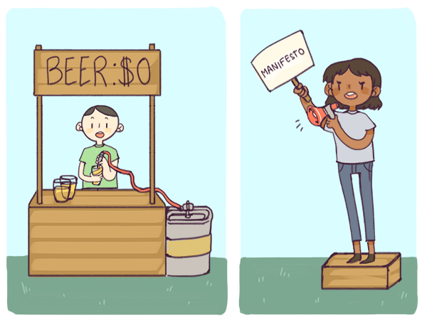

Frei wie in Freibier und in freier Rede
Mit der Erfahrung eines Jahrhunderts im Rücken, erscheint die autoritäre hochmodernistische Idee, es liesse sich planen, ja erzwingen, dass die Form der Funktion folge, jenseits einer bestimmten Grössenordnung und Komplexität wie ein frommer Wunsch. Zwei von der Open-Source-Bewegung gerne gebrauchte Wendungen, frei wie in Freibier und frei wie in freier Rede, bringen uns die Problemlösung durch Serendipität nahe – ein Ansatz, der in grossen und komplexen Systemen tatsächlich funktioniert1.{kind=link}

Die Art und Weise, wie sich komplexe Systeme — etwa erdumspannende Rechenkapazitäten — entwickeln, wird vielleicht am besten durch die Gallsches Gesetz genannte Feststellung beschrieben:Ein komplexes System, das funktioniert, hat sich stets aus einem einfachen funktionierenden System entwickelt. Ein komplexes System, das als solches entworfen wird, funktioniert nie und kann auch durch Nachbessern nichts zum Funktionieren gebracht werden. Vielmehr muss man mit einem funktionierenden einfachen System neu beginnen.Galls Gesetz ist allerdings viel zu optimistisch. Nicht nur aus dem Nichts konzipierte, nicht funktionierende komplexe Systeme können nicht funktionsfähig gemacht werden, das gilt auch für natürlich entstandene komplexe Systeme, die einmal funktioniert haben, aber jetzt nicht mehr funktionieren: Sie können meist nicht mehr so nachgebessert werden, dass sie ihre Funktionsfähigkeit wiedererlangen. Im Zentrum prometheischen Denkens steht ein anderer Ansatz: Ein neues, einfacheres System kann ein komplexes System, das sich in einer Existenzkrise befindet, zu neuem Leben erwecken. Die schlechte Nachricht: Ein System, das vor kurzem in der Existenzkrise angekommen ist, ist die geographische Welt. Die gute Nachricht: Die Grundlage für ein einfacheres System, das sie ersetzen kann, wurde bereits im 18. Jahrhundert gelegt – fast 200 Jahre, bevor die Software die Bühne betrat. Denn schon die industrielle Revolution selbst wurde von zwei Elementen unserer Welt angetrieben, die teilweise von der Logik der geographischen Welt befreit sind: Menschen und Ideen. Im 18. Jahrhundert begann die Welt allmählich, die Vorstellung abzulehnen, Menschen könnten Eigentum sein, das von anderen Personen oder Organisationen als Problemlösungs-„Ressource“ beansprucht und innerhalb bestimmter Grenzen festgehalten werden kann. In liberalen Demokratien entstanden die Konzepte von persönlichen Rechten und jederzeit fristlos kündbaren Arbeitsverhältnissen. Sie ersetzten Institutionen wie Sklaverei, Leibeigenschaft und von der Kastenzugehörigkeit abhängige erbliche Berufsstände. Das zweite zentrale Element waren Ideen. Im späten 18. Jahrhundert wurde es üblich, geistiges Eigentum durch Patente mit begrenzter Laufzeit zu schützen. Im alten China wurden jeder, der das Geheimnis der Seidenherstellung preisgab, vom Staat zum Tode verurteilt. Im Grossbritannien des späten 18. Jahrhunderts entfachte das Auslaufen von James Watts Patentschutz die industrielle Revolution. Diese zwei aufgeklärten Ideen machten es möglich, dass mitten in einer merkantilistischen Nullsummenwelt aus einem kleinen Rinnsal einzelner Erfindungen ein steter Strom des intellektuellen und kapitalistischen Nicht-Nullsummen-Fortschritts wurde. Dabei wurde die nach Stabilität strebende Logik des Merkantilismus nach und nach von der anpassungsfähigen Logik der schöpferischen Zerstörung ersetzt. Menschen und Ideen wurden auf zwei unterschiedliche Weisen immer freier. Um es mit einem berühmten Satz von Richard Stallman, dem Pionier der Open-Source-Bewegung, zu sagen: Es gibt zwei Arten von Freiheit – frei wie in Freibier und frei wie in freier Rede. Erstens waren Menschen und Ideen insofern zunehmend frei, als dass sie nicht länger als „Besitz“ galten, der von anderen wie Bier gekauft und verkauft werden kann. Zweitens wurden Menschen und Ideen insofern freier, als dass sie nicht mehr nur einen einzigen Zweck verfolgen durften. Sie konnten theoretisch jede Rolle spielen, die sie ausfüllen konnten. Diese zweite Art der Freiheit wird beim Menschen üblicherweise als spezifische Freiheitsrechte verstanden, beispielsweise Redefreiheit, Vereinigungs- und Versammlungsfreiheit oder Religionsfreiheit. All diesen Freiheiten ist gemeinsam, dass sie die Freiheit von Beschränkungen bezeichnen, die von einer Autorität auferlegt werden. Diese zweite Art der Freiheit ist immer noch so neu, dass sie für diejenigen beunruhigend sein kann, die daran gewöhnt sind, von Autoritätspersonen gesagt zu bekommen, was sie tun sollen,. Wenn beide Arten der Freiheit vorhanden sind, entstehen Netzwerke. So bewirkt beispielsweise die Redefreiheit oft das Entstehen einer florierenden Kultur der Literatur und des Journalismus, die hauptsächlich als Netzwerk einzelner Kreativer besteht und nicht in Form spezifischer Organisationen. Die Vereinigungs- und Versammlungsfreiheit schafft neue politische Bewegungen in Form von politischen Graswurzelnetzwerken. Freie Menschen und freie Ideen können sich eigenmächtig und beliebig zusammenschliessen, interessante neue Kombinationen erschaffen und ergebnisoffene Möglichkeiten erkunden. Sie können selbst entscheiden, ob es das Richtige für sie ist, ihre Talente zur Lösung derjenigen Probleme einzusetzen, die von autoritären Führungspersonen als dringlich erklärt werden – oder eben nicht. Freie Ideen sind dabei noch machtvoller, denn im Gegensatz zu einem einzelnen freien Menschen können sie an mehreren Stellen gleichzeitig eingesetzt werden. Freie Menschen und freie Ideen also bildeten das „funktionierende einfache System“, das zwei Jahrhunderte der disruptiven Innovation des Industriezeitalters antrieb. Die Tüftelei ist der Normalzustand in diesem funktionierenden einfachen System. Sie ist eine deutlich subversivere Kraft als üblicherweise angenommen, denn sie stellt autoritäre Prioritäten vor eine implizite Herausforderung. Somit wird die Tüftelei in der geographischen Welt zu einem unerwünschten, aber tolerierbaren Konstruktionsfehler. Solange materielle Sachzwänge den Umfang der Tüfteleien beschränkten, stellten sie für die Autoritäten auch nur eine eingeschränkte Bedrohung dar. Da die Produktionsmittel nicht frei waren – weder frei wie in Freibier noch frei wie in freier Rede – konnte die antiautoritäre Bedrohung durch Tüftelei in Schach gehalten werden, indem der Zugriff auf die Produktionsmittel beschränkt wurde. Jetzt, wo Software die Welt verzehrt, haben sich die Dinge verändert. Die Tüftelei ist nun weit mehr als die Tätigkeit einer Minderheit, die das Glück hat, Zugang zu einer gut ausgestatteten Werkstatt und einem Schrottplatz zu haben. Sie wird zum Motor einer globalen Massenblütezeit. Karl Marx selbst stellte fest, dass der Endzustand des Kapitalismus dann eintreten wird, wenn die Produktionsmittel zunehmend für alle verfügbar sein werden. Dabei wird freilich jetzt schon deutlich, dass die Folge davon weder das utopische kollektivistische Arbeiterparadies ist, von dem Karl Marx träumte, noch die utopische Freizeitgesellschaft, die sich John Maynard Keynes erhoffte. Stattdessen handelt es sich um eine Welt, in der immer freiere Menschen mit immer freieren Ideen und Produktionsmitteln arbeiten und nach ihren eigenen Prioritäten handeln. In einer solchen Welt wird es für autoritäre Führer, die daran gewöhnt sind, sich auf Zwang und kontrollierte Grenzen zu verlassen, immer schwerer, ihre Prioritäten anderen aufzuzwingen. Dank Chandlers Prinzip der Struktur, die der Strategie folgt, können wir verstehen, wohin uns diese Entwicklung führt. Wenn unfreie Menschen, unfreie Ideen und unfreie Produktionsmittel zu einer Welt von Containern führen, dann führen freie Menschen, freie Ideen und freie Produktionsmittel zu einer Welt von Strömen.
[1] In den frühen Jahren von Open Source wurden diese Ideen hauptsächlich in ideologischen Begriffen interpretiert und die Gründe für ihre Wirksamkeit waren kaum bekannt. 35 Jahre später, da die Bewegung von einer Randphilosophie zu einer gängigen Praxis sowohl im Nonprofit- als auch im Profit-Softwarebereich herangereift ist, kann man die Ideen aus heutiger Sicht und Erfahrung am besten als einen Teil der Technologiestrategie verstehen. Wie Simon Wardley argumentiert, sind diejenigen Unternehmen im Open-Source-Bereich am erfolgreichsten, die „open by thinking“ (d. h. offen in ihrer Denkweise) sind und nicht „open by default“ (d. h. im Sinne von unkritisch übernommenen Werten).